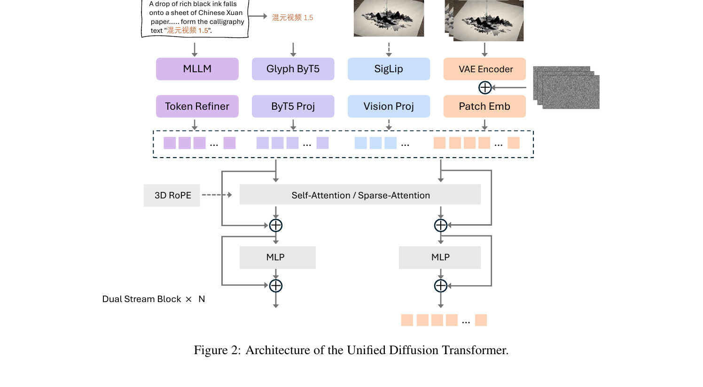
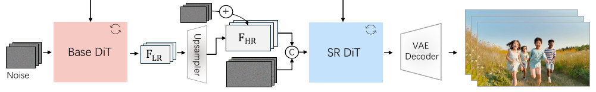
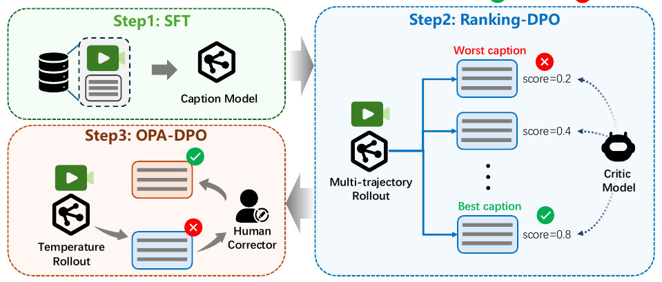
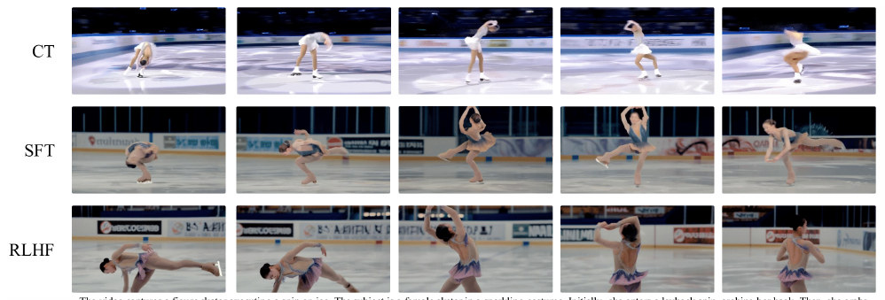

速览
五条要点
不靠 MoE，单个 8.3B 打开源
作者把 Wan2.2 的 MoE（两个 14B 专家，总 27B、激活 14B）当作效率反例§1，自己用一个 8.3B 双流 DiT + 16×/4× VAE，同一模型联合训练 T2I / T2V / I2V§3.1。
数据：>1000 万小时 → ≈800M 片段
切成 2–10 s 片段，裁字幕/台标/水印（保留面积 <60% 即丢），再过基础 / 画质 / 美学三级过滤§2.1。图像 5B 张沿用 HunyuanImage 3.0 流程§2.1。
三类 captioner，caption 模型也做 DPO
图像 / 结构化视频 / I2V 指令式三种 caption；为缓解「越详细越幻觉」，caption 模型按 SFT → Ranking-DPO → OPA-DPO 后训练§2.2 · 图 1。运镜由专门识别模型给出，只并入高置信结果§2.2。
SSTA：长序列才显著提速
720p 241 帧每步 5.51 s → 2.95 s表 7；121 帧只从 2.01 s → 1.56 s表 7。叠加 SageAttention / torch.compile / 特征缓存后，241 帧 50 步 96.78 s → 58.39 s表 8。
评测全是内部集，且不赢 Veo3
T2V GSB 净胜率：对 Wan2.2 +17.12%、Kling2.1 Master +12.6%、Seedance Pro +11.02%、对 Veo3 −10.32%表 5；I2V 对 Seedance Pro −5.77%、Veo3 −3.61%表 6。无公开基准分数。
架构：统一 DiT + 潜空间超分
两段式：8.3B 统一 DiT 生成 480p/720p，再由级联 VSR 升到 1080p§1 · §3。

骨干与 VAE 表 1 · §3.1
- 双流块
- 54 个；model dim 2048，FFN 8192，16 头 × 128表 1
- VAE
- 因果 3D Transformer，图像视频联合编码；空间 16×、时间 4×、潜通道 32§3.1
- patch size
- 原文未披露（因此无法从分辨率反推 token 数）
- 优化器
- Muon，weight decay 0.01；称在一半步数内达到比 AdamW 更低的训练损失§3.1
文本与 I2V 条件 §3.1
- 文本：Qwen2.5-VL 做语义理解，多语言 Glyph-ByT5 专管字形，提升视频内文字渲染§3.1。
- I2V 参考图两路注入：① VAE 潜变量与噪声潜变量按通道拼接，保细节；② SigLip 语义特征按序列拼接，强化语义与指令遵循§3.1。
- 可学习的 type embedding 区分不同条件类型§3.1。
SSTA：选择性块 + 滑动窗口的块稀疏注意力
无参数，可在任意训练阶段接入；实际在蒸馏阶段引入稀疏训练§3.1。下图按算法 1 逐行复原。
VSR：同架构、在潜空间做超分

- VSR 沿用主模型 8.3B 视频 DiT 架构，在潜空间超分；LR 潜变量按通道拼接注入§3.2。
- 为对齐 LR / HR 潜变量，单独训练一个 latent upsample block§3.2。
- 引言称其为 few-step 网络§1，具体步数 原文未披露。
相对前代 / 同类，原文明确说了什么§1 · §2.1
- 对 HunyuanVideo（前代）：视频数据流程「基于 [4]」，扩大数据量并改进过滤§2.1。原文没有给出与前代在参数、结构、指标上的逐项对比。
- 对 Wan2.2：作者认为 MoE（2×14B，总 27B / 激活 14B）计算低效；其 5B 版本虽用高压缩 3D VAE，但运动稳定性与美学仍不足§1。这是作者观点，未给对 5B 版本的直接评测。
数据：过滤链与三类 caption
本节是全篇最值得细读的部分；但来源构成与配比几乎都没披露，下面只画原文写明的步骤与数量。
4.1 视频：获取 → 清理 → 质量筛
各级过滤的阈值（画质、美学分数线）、每级淘汰比例 原文未披露。
4.2 图像
沿用 HunyuanImage 3.0 的获取与处理流程§2.1，从 >10B 张池中选出 5B 用于预训练，另有 1B 留给后续阶段§2.1——对应表 2 的 Stage I（256p，5 billion）与 Stage II（512p，1 billion）表 2。保留率约一半或更低推算。
4.3 已披露规模（全流程）
| 数据 | 规模 | 说明 | 来源 |
|---|---|---|---|
| 原始视频 | >1000 万小时 | 去重、去损坏之后 | §2.1 |
| 预训练视频片段 | ≈800M | 2–10 s，经三级过滤 | §2.1 |
| 预训练图像 | 5B（池 >10B） | 另留 1B 给后续阶段 | §2.1 |
| Stage III / IV / V / VI | 800M / 200M / 100M / 100M | 256p→480p→720p；单位与图像占比未说明（表头的 “/” 写法未在行中出现） | 表 2 |
| CT（T2V、I2V 各一份） | 各 1M 片段 | 跨类别平衡，取自 premium 数据集；T2V 偏高动态 | §4.2 · 表 2 |
| SFT | 原文未披露 | 按美学、清晰度、运动平滑度严格筛选 | §4.2 |
| I2V RL prompt 集 | 100+ 类别 | 由高美学图像构建，VLM 生成 prompt 后人工核验图文一致 | §4.2 |
| T2V DPO prompt 集 | O(10K) | LLM 生成 prompt + 训练视频 caption；每 prompt 生成 N 个候选，N 原文未披露 | §4.2 |
| VSR 训练视频 | 1M 片段 | 1K–4K 分辨率，3–10 s，24 fps；另加高分辨率图像（数量未披露） | §4.3 |
| 数据来源构成 / 版权 | 原文未披露 | 只写 “variety of channels” | §2.1 |
4.4 Caption：三类专用模型
图像 caption §2.2
方法同 HunyuanImage 3.0，原文不再展开。
视频 caption §2.2
高度结构化、多组件：多层级叙述文本 + 一组影视/美学属性（景别、机位角度、构图、光照、风格、色调、氛围）。
I2V 指令式 caption 新模块 · §2.2
只描述相对首帧的时间演变与变换，覆盖前景主体和背景环境的变化。I2V 的 CT 阶段专门使用这类 caption§4.2。

为什么做 RL：richness–hallucination 权衡 §2.2
越追求细节越容易幻觉。作者把 OPA-DPO [12]（「on-policy 数据是关键」的 DPO 去幻觉方法）接入 caption 后训练，目标是细节最多、事实错误最少§2.2。
Critic 模型是什么、打分维度、人工修正的样本量、caption 质量的量化指标：原文未披露（Step 2/3 细节只见于图 1）。
运镜描述：专门识别模型 §2.2
识别多种运镜类型，既做 clip 级（整段）也做序列级（随时间）；只把高置信预测转成自然语言并并入结构化 caption，目的是让生成模型可控运镜§2.2。
运镜类别数、置信度阈值：原文未披露。
4.5 配比
原文唯一给出的比例是预训练阶段的任务配比 T2I : T2V : I2V = 1 : 6 : 3§4.1。数据来源、类别、分辨率配比均未披露，故只画这一条。
训练配方
从 T2I 起步，逐级拉高分辨率、时长和帧率；后训练 T2V、I2V 分开做 CT → SFT → RLHF§4。
预训练（Stage I–VI）
T2I 256p
- 数据
- 5B
- 任务
- T2I
多宽高比分桶采样
T2I 512p
- 数据
- 1B
- 任务
- T2I
称显著加速后续 T2V/I2V 收敛
256p 16fps
- 数据
- 800M
- 时长
- 2–10 s
T2V/I2V/T2I 混训 1:6:3
480p 16fps
- 数据
- 200M
- 时长
- 2–10 s
720p 16fps
- 数据
- 100M
- 时长
- 2–10 s
720p 24fps
- 数据
- 100M
- 时长
- 2–10 s
- shift 调度：flow matching 对 shift 敏感，作者为不同 token 长度设计了一系列 shift 调度§4.1；具体取值 原文未披露。
- 超参：学习率、batch size、各阶段步数、GPU 时 原文未披露；只给出 Muon + weight decay 0.01§3.1。
后训练（T2V / I2V 分别进行）
继续训练
- 480p/720p 24fps，各任务 1M 片段表 2
- T2V 偏重高动态片段
- I2V 改用只描述动作与变换的指令式 caption
- 两任务都从同一个最优预训练 ckpt 起步§4.2
精选微调
- 按美学、清晰度、运动平滑度严格筛选
- 数据量 原文未披露
- 称 CT+SFT 后稳定性、画质、美学、时序一致性明显提升§4.2
主要修伪影与运动
- I2V：在线 RL。VLM 奖励模型 4 维：文本对齐、图像对齐、画质、运动动态；变随机种子和 CFG 混合采样；MixGRPO（ODE–SDE 混合求解）§4.2
- T2V：先离线 DPO——O(10K) prompt、每条 N 个候选、人工 GSB 标注语义/运动/美学；再接与 I2V 相同的在线 RL§4.2
- 理由：现有奖励模型分不清细粒度运动质量§4.2

VSR 训练 §4.3
- 用预训练 T2V 模型初始化
- 1M 片段（1K–4K，3–10 s，24 fps）+ 高分辨率图像
- LR 潜变量与噪声按通道拼接；全参数可训，flow matching 目标
蒸馏与稀疏训练 细节缺失
SSTA 在蒸馏阶段接入§3.1；测速用的是 CFG 蒸馏模型§6。蒸馏方法、步数、数据 原文未披露。
评测：Rating + GSB，全部内部集
对比对象：Wan2.2、Kling2.1 Master、Seedance Pro、Veo3（原文未注明 Wan2.2 用的是哪个规格）表 3–6。
Rating：T2V（HY1.5 720p）
| 维度 | HY1.5 720p | Wan2.2 | Kling2.1 Master | Seedance Pro | Veo3 |
|---|---|---|---|---|---|
| Instruction following | 61.57 | 44.07 | 50.03 | 53.19 | 73.77 |
| Aesthetic quality | 63.30 | 65.98 | 68.00 | 68.22 | 67.98 |
| Visual quality | 57.35 | 56.37 | 59.68 | 60.20 | 58.64 |
| Structural stability | 79.75 | 73.75 | 66.74 | 68.69 | 75.62 |
| Motion effects | 57.67 | 53.08 | 58.59 | 55.17 | 60.81 |
只在结构稳定性上第一；美学 63.30 是五家最低；指令遵循 61.57 落后 Veo3 12.20 分推算。正文把第一维称作 text-video consistency，表中写 Instruction following§5.1。
Rating：I2V
| 维度 | HY1.5 480pSR | HY1.5 720p | Wan2.2 | Kling2.1 Master | Seedance Pro | Veo3 |
|---|---|---|---|---|---|---|
| Instruction following | 63.11 | 63.05 | 56.19 | 68.43 | 62.90 | 67.86 |
| Image consistency | 68.82 | 72.07 | 73.53 | 64.09 | 73.06 | 72.19 |
| Visual quality | 59.87 | 60.33 | 58.31 | 59.28 | 58.95 | 59.29 |
| Structural stability | 70.13 | 66.67 | 69.03 | 59.71 | 68.01 | 69.25 |
| Motion effects | 57.60 | 58.62 | 57.41 | 57.36 | 60.47 | 60.91 |
HY1.5 480pSR = 先生成 480p 再用 VSR 升到 720p（表 4 原注）表 4。它在结构稳定性上反超原生 720p（70.13 vs 66.67），但图像一致性低 3.25 分推算。Rating 的打分尺度、样本数、评分人数 原文未披露。
GSB：300 条 prompt / 300 张图，>100 名专业评估员
每个输入每个模型只推理一次、不挑样，竞品用默认配置§5.2。表中 HY Win Rate = HY Better − Other Better（逐项核对一致）推算。
100% 堆叠条，各段为原表百分比；右侧为原表 HY Win Rate。窄段省略数字。
注意 T2V 里 Equally bad 占 30.71%–42.76%表 5：对 Wan2.2 / Kling / Seedance 三组，「两边都差」比「HY 更好」还多。Rating 与 GSB 结论也不总一致：T2V Rating 里 Seedance Pro 美学、画质都高于 HY，GSB 却是 HY 净胜 11.02%表 3 · 表 5。
推理速度：SSTA 只在长序列上明显
引言的「10 s 720p 端到端 1.87×」§1与表 7 每步耗时之比 5.5070 / 2.9475 吻合推算；开启工程加速后的 50 步总时长比为 96.78 / 58.39 ≈ 1.66×推算。
表 8：开启工程加速后的 50 步总耗时SageAttention + torch.compile + 特征缓存
| 配置 | Sparse Attention | 50 步总耗时 (s) | 平均每步 (s) |
|---|---|---|---|
| T2V 480p (480×848) · 121 帧 | ✗ | 13.90 | 0.2781 |
| T2V 480p (480×848) · 241 帧 | ✗ | 27.08 | 0.5418 |
| T2V 720p (720×1280) · 121 帧 | ✗ | 28.33 | 0.5667 |
| T2V 720p (720×1280) · 121 帧 | ✓ | 26.41 | 0.5283 |
| T2V 720p (720×1280) · 241 帧 | ✗ | 96.78 | 1.9356 |
| T2V 720p (720×1280) · 241 帧 | ✓ | 58.39 | 1.1679 |
均为 CFG 蒸馏模型、8 张 H800、全卡 context parallel§6。表 7 的 ± 为多次运行的标准差/波动（原文写 averaged across multiple runs，未说明 ± 的定义）。
新在哪（可核对）
SSTA：Q-K 相似度减 K-K 冗余做块选择，再和 STA 窗口组合
块重要性 = λ·(Q̄K̄ᵀ) − β·(K 块间平均相似度)，Top-k 选块，与滑动窗 mask 组合后走块稀疏 kernel；无参数、在蒸馏阶段接入算法 1 · §3.1。
证据：表 7/8 的速度；无稀疏 vs 全注意力的质量对比。
Caption 模型本身做偏好对齐：Ranking-DPO → OPA-DPO（人改正例）
把 caption 的「详细 vs 幻觉」当成对齐问题处理，critic 打分排序造 DPO 对，再用人工修正的 on-policy 样本做 OPA-DPO§2.2 · 图 1。
证据：只有流程图，无 caption 质量指标或下游消融。
I2V 指令式 caption：只写「相对首帧发生了什么」
作为独立 captioner 训练，并在 I2V 的 CT 阶段专用，目的是提高动作保真§2.2 · §4.2。
证据：无对照实验。
T2V 对齐先离线 DPO 再在线 RL
理由是现有奖励模型分不清细粒度运动质量，所以先用人工 GSB 标注的 pair 做 DPO 修运动伪影，再接 MixGRPO 在线 RL§4.2。
证据：图 4 单例定性；各阶段无数字。
超分直接复用 8.3B 主干、在潜空间做
T2V 权重初始化，独立训练 latent upsampler 对齐 LR/HR 潜变量§3.2 · §4.3。
证据：图 5 定性；表 4 的 480pSR 一列。属于工程组合，单项都不算全新。
不算新点的常规工程：多宽高比分桶、渐进式分辨率、T2I 预热、I2V 通道拼接、SageAttention / torch.compile / 特征缓存、offload 降显存。
对图像编辑数据 / 评测 / caption 的启示
每条先写论文怎么做（带出处），再写一条可迁移做法。「迁移」都是本页的建议，不是论文内容。
C1差异式指令单独成一类 caption
论文：I2V 用专门的指令式 captioner，只写相对首帧的前景/背景变化；I2V CT 阶段专用这类 caption§2.2 · §4.2。
迁移建议，不是论文内容：编辑数据别拿「目标图全描述」凑指令。单独训一个只输出 src→tgt 差异的 captioner，并把「前景变了什么 / 背景变了什么」拆成两个字段；后期训练阶段只喂差异式指令。
C2用偏好对齐治 caption 幻觉
论文：caption 模型 SFT 后，多轨迹采样 + critic 打分做 Ranking-DPO，再用人工修正的 on-policy 输出做 OPA-DPO§2.2 · 图 1。
迁移建议，不是论文内容：编辑 captioner 的人工标注改成「改模型自己的输出」而非从零写：同一对图采样多条差异描述，标注员只删错句、补漏项，修正版作 win、原版作 lose。省标注量，正例也贴近模型分布。
C3结构化属性字段
论文：视频 caption = 多层级叙述 + 景别、机位、构图、光照、风格、色调、氛围等属性§2.2。
迁移建议，不是论文内容：编辑样本的 src/tgt caption 也带同一套全局属性字段，逐字段 diff 就能自动标出「换光照 / 换风格 / 改构图」类编辑，并给「未变字段」自动生成保持约束。
C4专家模型只并入高置信结果
论文：运镜由专门识别模型给出，只把高置信预测转成文字并入 caption§2.2。
迁移建议，不是论文内容：OCR、人脸/姿态、计数等专家信号并入编辑指令时同样设置置信门槛；低于门槛就不写，而不是让 VLM 猜——宁缺勿错，尤其是文字编辑的源串。
D1裁水印 + 保留面积阈值
论文：裁掉字幕/台标/水印区域，裁后保留 <60% 原帧就整段丢弃§2.1。
迁移建议，不是论文内容：编辑对的 src/tgt 必须用同一个裁剪框；任一侧有水印/字幕而另一侧没有的对直接丢，否则模型会学到「编辑 = 去水印」的捷径。
D2基础过滤器清单可直接照搬
论文：去黑边 padding、拼接痕迹、宫格拼图、静止/低动态§2.1；转场用专门分类器二次剔除§2.1。
迁移建议，不是论文内容：爬来的 before/after 图常是左右拼接或宫格，宫格检测要放在最前。「低动态」在编辑里对应「几乎无变化」的 no-op 对，按像素/语义差异下限过滤；从视频抽帧造对时，帧间有转场的也要剔。
D3画质拆维度、和美学分开打
论文：画质算子 4 维（清晰度、细节保留、噪声与伪影、动态范围），美学用另一个算子§2.1。
迁移建议，不是论文内容：对 tgt 逐维打分并要求「tgt 不劣于 src」，防止编辑数据把降质（糊、噪、动态范围压缩）当成编辑效果教给模型。
D4数据漏斗：大池粗筛 → 每任务 1M 精选 → 严选 SFT
论文：800M → 200M → 100M → 100M 预训练，CT 每任务 1M 且跨类别平衡，SFT 再按美学/清晰/平滑严选表 2 · §4.2。
迁移建议，不是论文内容：编辑数据也分三层，CT 层按编辑类别（增删改、风格、文字、人像）做显式平衡，并在 CT 层就切到最终 caption 格式，SFT 层只留人工过审样本。
E1GSB 把「同好 / 同差」拆开报
论文：GSB 报四档，T2V 的 Equally bad 达 30.71%–42.76%表 5；净胜率 = Better − Worse推算。
迁移建议，不是论文内容：编辑盲测同样报「同差」比例并单独抽样复盘——它指向两边共同的失败模式（常见是保持性），是下一轮数据最该补的地方，净胜率看不出来。
E2诊断用 Rating、决策用 GSB
论文：Rating 多维诊断短板，GSB 比整体观感；I2V Rating 维度含图像一致性与指令响应§5 · §5.1。两者结论可不一致表 3 · 表 5。
迁移建议，不是论文内容：编辑 Rating 至少拆成「指令遵循 / 非编辑区保持 / 画质 / 结构合理」四维，与 GSB 并列报；两者矛盾时按维度回看样本，而不是只信一个数。
E3评测协议写死「只跑一次、默认配置」
论文：每输入每模型只推理一次、不挑样、竞品默认配置，>100 名专业评估员§5.2。
迁移建议，不是论文内容：编辑评测冻结输入图、指令与种子，记录竞品 API 版本与日期；再补上论文没给的评估员一致性和置信区间，结果才可复现。
E4奖励模型看不清的，先用人工 pair 做 DPO
论文：奖励模型分不清细粒度运动 → 先离线 DPO（人工 GSB 标注）再在线 RL；I2V 的 VLM 奖励含文本对齐、图像对齐、画质、运动 4 维§4.2。
迁移建议，不是论文内容：编辑里身份漂移、细微纹理改变这类奖励模型抓不住的问题，先攒人工偏好对做 DPO；在线 RL 的奖励则拆出「图像对齐（保持）」独立一维，别和指令遵循混成一个分。
局限与存疑
- 没有任何消融。Muon「一半步数更低 loss」§3.1、Glyph-ByT5 文字渲染、I2V 双路注入、caption RL、T2I 预热「显著加速收敛」§4.1均只有文字断言，无曲线或数字。
- 评测全在内部集，不可复现。300 条 prompt / 300 张图未公开§5.2；Rating 的尺度、样本数、评分人数未写；没有报告任何公开基准分数。
- 对比对象偏旧且规格不明。引言点名 Kling2.5、Veo3.1、Sora2§1，评测实际对比的是 Kling2.1 Master、Veo3，Sora2 缺席；Wan2.2 未注明是 A14B 还是 5B表 3–6。
- 正文与表格不一致：超分目标。§1/§3.2 说 VSR 升到 1080p，表 4 注释却说 480pSR 是「升到 720p」表 4。
- 正文与表格不一致：帧率。§4.1 写「从 256p 16fps 推进到 480p 与 720p 24fps」，表 2 中 480p（IV）与 720p（V）仍是 16fps，只有 VI 是 24fps§4.1 · 表 2。
- 表 2 的数据量口径不清。表头说「/ 前为视频、后为图像」，但所有行都没有「/」；Stage III–VI 混训了 T2I，图像用量无法拆出表 2。
- SSTA 只有速度、没有质量对比；mask 组合语义可疑。算法 1 写 M_sel ∧ M_sta（字面为交集），与「静态局部 + 动态全局」的描述不太对得上，原文未解释算法 1。「端到端 1.87×」实为表 7 每步耗时之比推算。
- 关键配方缺失。patch size、shift 取值、学习率/batch/步数、SFT 数据量、DPO 的 N、RL 步数、CFG 蒸馏方法与步数、VSR 步数都未披露。
- 数据来源与许可未说明。视频只写 “variety of channels”§2.1；模型许可证原文未写。
图表索引
| 编号 | 内容 | 本页位置 |
|---|---|---|
| 图 1 | Caption 模型后训练流程（SFT → Ranking-DPO → OPA-DPO）· p.3 | 数据 4.4 |
| 图 2 | 统一 DiT 架构 · p.4 | 架构 |
| 图 3 | 级联视频超分流程（裁图缺顶部 prompt）· p.6 | 架构 · VSR |
| 图 4 | CT / SFT / RLHF 各阶段效果 · p.8 | 训练配方 |
| 图 5 | 720p vs SR 1080p 对比（裁图仅一组样例）· p.9 | 页首 |
| 首页裁图 | figures/fig0-teaser.jpg 实为首页正文截图（摘要链接与引言），非论文图，本页未引用 · p.1 | — |
| 算法 1 | SSTA 四步 · p.5 | 架构 · SSTA 示意 |
| 表 1 | 架构超参 | 速览 · 架构 |
| 表 2 | Stage I–VIII 分辨率 / 数据量 / 任务 | 训练配方 |
| 表 3 / 表 4 | T2V / I2V Rating | 评测 |
| 表 5 / 表 6 | T2V / I2V GSB | 评测 |
| 表 7 / 表 8 | 无加速每步耗时 / 加速后 50 步总耗时 | 评测 · 推理速度 |